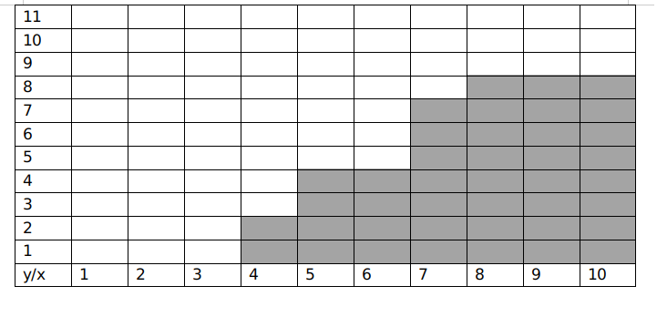
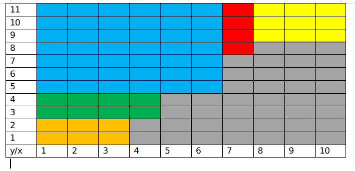
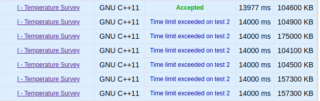

在现场(我)写崩了C题，虽然最后救回来了（队友带飞），但是还差一点，差一题才到金
概览：
- A. Apple Business
- B. Balanced Diet
- C. Line-line Intersection
- D. Master of Data Structure
- E. Minimum Spanning Tree
- F. Mini-game Before Contest
- G. Radar Scanner
- H. Skyscraper
- I. Temperature Survey
- J. Time Limit
A. Apple Business
pending（暂时不会）
B. Balanced Diet
题意：给你n个糖果，每个糖果有价值$a_i$,属于种类$b_i$,让选择一些糖果，使得 (总价值/选择种类最大的个数) 尽量大，第j种糖果如果选择，选择的个数就应该大于等于$l_j$,(11 |
|
C. Line-line Intersection
题目大意： 给你n个直线，问有多少对直线有公共点。 思路：直接用容斥原理， ans=n个直线的对数-平行的直线对+平行的直线中重合的对数 虽然思路好想，但是这个不好写。第一种写法，将每一个直线化成$y=kx+b$的形式（没有k的单独放一起），然后将这些直线按照k和b排个序，最后计算相同的个数即可
这种写法最重要的是要处理精度问题，因为k有可能会到 1e-9，所以eps需要设置在1e-11左右才能分辨！！！(但是在现场赛我写的忘了加sort了，怎么调都不对，太菜了～～）
代码：
1 |
|
第二种写法（标程思路），将直线表示成Ax+By+C=0的形式（注意long long），判断平行就判断A1×B2==A2×B1是否成立即可，平行的时候看C是否相等就行。
对于点(x1,y1),(x2,y2), A(x1-x2)+B(y1-y2)=0, 令A=y1-y2,则B=x2-x1, 代入求C即可，计数用map保存就行
1.不要忘了斜率比较的时候注意正负
2.不要忘了把A，B约分后再求C!!!，比如 x+y+1=0 和2x+2y+2=0两条直线，虽然c不同，但是其实这是同一条直线
1 |
|
D. Master of Data Structure
题意：给你一个n（1<=n<=500000)个点的树，初始的点权都是0，然后给你m（1<=m<=2000)个操作，每次操作都是给定两个节点，对这两个节点之间的路径来操作，操作共有七种: 1. u v k (1≤u,v≤n,1≤k≤105), for all nodes x∈p(u,v), change wx to wx+k. 2. u v k (1≤u,v≤n,1≤k≤108), for all nodes x∈p(u,v), change wx to wx⊕k, where "⊕" denotes the bitwise XOR operation. 3. u v k (1≤u,v≤n,1≤k≤108), for all nodes x∈p(u,v), change wx to wx−k. Note that if wx首先可以想这样一个问题：如果一个rmq的问题，这个区间非常大，但是操作和询问1e3数量级的，那么是不是可以离散化缩点然后大模拟来做？
在树上也一样可以缩点来模拟，首先在一维的时候，所有的操作的线段的端点可以把一个区间分成x份(没有交集)，而其中不是线段端点上的点都是无用的点(即可以跟其他无用点合并），在树上也一样，这些查询的路径端点可以把树分成x份个不相交的线段，设操作的两个端点u，v为关键点，那么树上的划分就是由这些关键点和这些关键点两两LCA组成的，这些点组成一个新树，新树的边就表示线段里被压缩的若干点(可能为0)
这个新树叫做虚树，就是可以将无用的点删去（或压缩）生成的，而且m个关键点时，这些点的LCA会不多于m-1个，（虚树也是看这个题解刚学的，讲解：链接）因此将数据离线化后建的图节点数是O(m)的，直接大模拟就行(好像只能大模拟）。
下面还有一个问题，就是对关键点两两LCA是$m^2log(n)$的复杂度，倍增法直接就T了，O(1)的LCA算法我没有试（主要是太菜了不会写），在大腿学长的指点下，才知道O(mlog(n)）就可以解决：将关键点按dfs序排序，两个相邻关键点的LCA就属于虚树里面的点，而其他的LCA一定包括在内。（这也就是前面的结论，新增加的点不会超过m-1个）。
求出所有的关键点之后，就建立一个新图就行了，每个节点与父节点的边就是缩点(注意为0)，然后就是大模拟了。
总复杂度$O(n+mlog(n)+m^2)$。
ac代码(写的有点丑,历时一天提交17次)：
1 |
|
E. Minimum Spanning Tree
温暖の签到题，虽然思路不太好想，但是代码非常好写。 题意：给你一棵**树**,将树的边变成新图的节点，原来树中的两个有公共节点的边在新图上变成一条边，边权为原先树上的这两条边的和，求生成的新图的最小生成树。 思路：对于原先树的每一个节点，相连的边会两两生成一个新边，也就是在新图上对应着一个完全图，(新图上)完全图的边权是两个节点的和，那么这个的最小生成树就是节点最小的和其他的连接起来形成的。所以，记录每个节点的度数num，连的边的边权和sum，最小的边的权值min，这一个节点生成的新图的最小生成树就是min*(num-1)+(sum-min)。因为原来的图是一棵树，所以生成的新图是许多完全图组合来的(不会交叉)，最后的答案就是每个节点生成的完全图的和即可。1 |
|
F. Mini-game Before Contest
题意：给你一个有向图，图上放一枚棋子，让六个人轮流移动，六个人中分成两队，每三人一队，当某个人不能移动的时候这个队就输了。每个队里有想赢的人，也有演员（想自己队输），如果赢(输)不了，也会尽可能达到平局。问棋子从1到n每一点开始，最终的结果是什么。 思路： (博弈dp)设$dp[i][j]$为第i个节点上轮到第j个人移动时的最终结果，（设1为A队赢，-1为B队赢，0为平局），则想要A赢的人转移方程为$dp[i][j]=max( dp[v][j+1] ) $其中v为i节点的所有下一个节点，想要B赢的转移方程为$dp[i][j]=min( dp[v][j+1])$（因为每一个决策只能通过下一个人的决策来确定）。然后就是状态转移更新的问题了： 首先把所有的dp值都赋为0，可以把图反向建边，每个入度为零的节点是可以直接确定的节点（无论怎样决策都是输），然后将这些节点放入队列，以SPFA的方式进行松弛，直到队列为空，因为每个节点只会在1,0，-1之间更新常数次，所以时间复杂度O（n+m）。
但是还有最后一个问题，就是更新一个状态的复杂度的问题：对于每一个状态，需要遍历所有的后继节点才能获取当前的dp值(复杂度有点高)，可以用三个cnt数组进行优化，记录每个状态后继状态的1,0,-1的数量，这样每次更新就是O（1）的复杂度。对于每个状态，只在出队列的时候更新dp值，同时记录之前的dp值，然后将所有后继状态的cnt值更新即可。
ac代码：
1 |
|
G. Radar Scanner
题意：给你n个矩形，找到一个点使得n个矩形都在这个点重合并且移动距离最小，输出最小的距离 思路：明显x和y两个方向之间没有关系，所以只考虑一维的即可。对于x方向，假设点的坐标为$x_0$,那么$x_0$从左到右的时候总移动距离是先减后增的，所以三分出来这个最低点即可得到答案（y轴一样）。代码：
1 | include<iostream> |
标程思路：对于每一维，线段$[l_i,r_i]$移动到$x_0$的移动距离是$(|l_i-x_0|+|r_i-x_0|-|r_i-l_i|)/2$ ,那么只要最小化$\sum|r_i-x_0|+|l_i-x_0|$就行了，要使最小，$x_0$就是所有l，r的中位数，然后答案就出来了。
H. Skyscraper
题意：给你n个数a[]，对于h[]数组起始都是0，每次可以进行一次操作，让h数组里的[l,r]区间的数加一，问最少需要多少次使得h[i]==a[i]{i<=1<=n}(h[i]等于a[i]后就不能再加了)。 a是动态变化的，给q个询问， 1 l r k 表示把a数组[l,r]都加k， 2 l r 表示询问最少多少次使[l,r]区间内所有h[i]==a[i](h初始都为0)。思路：从l到r增加，首先l的位置需要增加a[l]次，到l+1的时候，分两种情况: 1. 如果a[l+1]>a[l],那么操作次数就增加h[l+1]-h[l]. 2. 如果a[l+1]<=a[l], 那么不需要增加额外的操作，跟着h[l]就可以一起操作完了。
设x[i]为a[i+1]-a[i],那么最小的操作次数就是$a[l]+\sum_{i=l}^{r-1}max(x[i],0)$,因此，维护一个正的差分序列sum1即可(为了方便操作在a序列前面加一个0和在a序列的后面也加一个0), 但是这个a是动态的，所以可以维护一个差分的树状数组sum，对a数组的区间修改就相当于点修改(l点和r+1点),修改完之后判断正负再对正差分树状数组sum1进行两个点修改，每次查询的答案就是sum[l]+(sum1[r]-sum[l])
ac代码：
1 |
|
I. Temperature Survey
题意：给你一个长度为n的不下降数组a,问有多少个不下降的数组b，使得$b_i <= a_i [1<=i<=n]$.
思路(根据题解)：
比如当测试数据为n=10,a[]={3,3,4,4,6,6,6,7,10,10};的时候
首先可以把这个问题抽象成一个二维的走格子的问题(如图)
每次从(0,1)点出发，每次只能向上走1格或者向右走i格，问要到达(a[x],n)点(1<=x<=n)，经过的路径有多少种（灰色是不可以经过的点)。 可以向上加一行，问题就变成了要到达$a[n][n+1]$的路径数。
设$dp[i][j]$为到达第i行第j列的路径数，可以推出$dp[i][j]=dp[i-1][j]+dp[i][j-1]$，显然这样$O(n^2)$的做法会超时，所以可以考虑将这个dp优化。
如果在一个矩形中，知道了左边界和下边界，那么上边界和右边界就可以用左和下边界与组合式的系数表示，可以用卷积进行优化。
所以将原来的图形划分为若干互不相交的矩形，从左下到右上，矩形的左边界可以由之前的矩形的右边界下边界暴力求出来，矩形内部用NTT卷积得出上边界和右边界，然后继续下一个，直到最后一个矩形：
如图，矩形的划分
所以剩下的最复杂的地方就是推卷积公式了，我推了好长时间都没有找到公式，问大腿学长的时候他马上就推出来了，我才知道我推不出来的原因是没有建系！！建立坐标系，就可以直接用组合数得到公式了！
设横向为1-m，纵向为1-n
公式：
$$
up: dp[n-1][k]=\sum_{i=1}^{n-1}dp[i][0]C_{k-1+n-i-1}^{k-1}+\sum_{j=1}^{k}dp[0][j]C_{n-2+k-j}^{n-2}
$$
$$
right: dp[k][m-1]=\sum_{i=1}^{k}dp[i][0]C_{m-2+k-i}^{m-2}+\sum_{j=1}^{m-1}dp[0][j]C_{m-j-1+k-1}^{k-1}
$$
dp值的存储可以用二维的map，也可以用邻接表然后二分查找(因为是升序插入的)
写的时候卡好多地方的常数，比如ntt用的g^x需要预处理出来等（看qls的代码才知道），T了好几天终于过了！
第一次AC是卡着时限过的(服务器跑的稍微慢一点就T了)：
最终ac代码：
1 |
|
J. Time Limit
第一道签到题，求第一个大于等于 min(3*a[1],a[i]) {2<=i<=n} 的偶数ac代码：
1 |
|
**END**